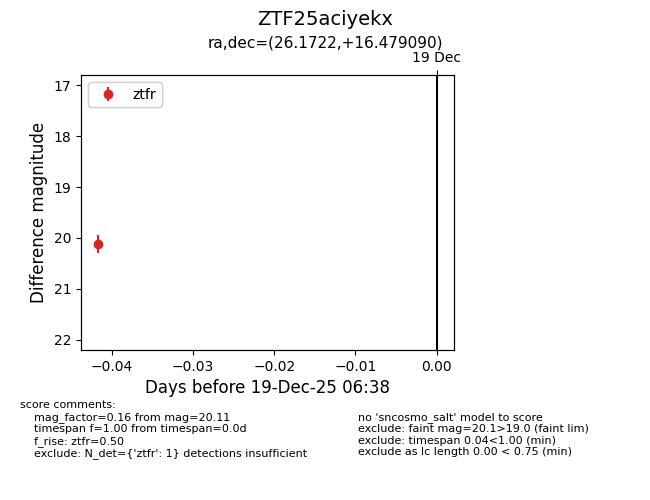
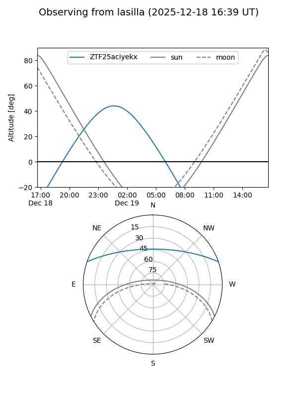
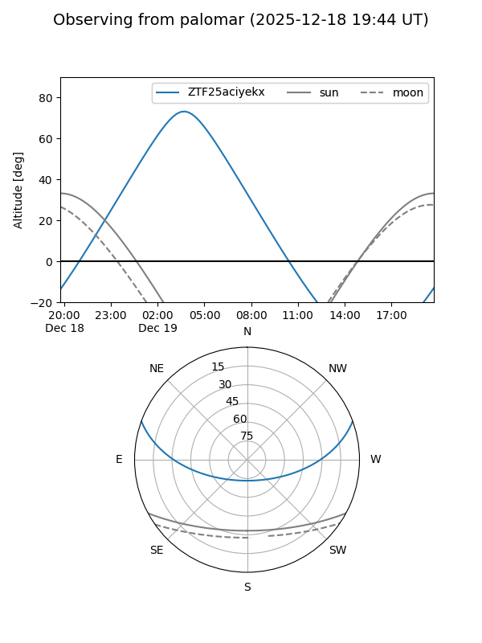

ZTF25aciyekx
Target ZTF25aciyekx at 2025-12-19 06:39
Aliases and brokers:
FINK: fink-portal.org/ZTF25aciyekx
Lasair: lasair-ztf.lsst.ac.uk/objects/ZTF25aciyekx
ALeRCE: alerce.online/object/ZTF25aciyekx
alt names
ZTF25aciyekx (ztf,fink_ztf)
Coordinates:
equatorial (ra, dec) = 26.1722,+16.47909
equatorial (HMS+DMS) = 01:44:41.32,+16:28:44.72
galactic (l, b) = (140.9719,-44.51934)
Flags:
Photometry:
last ztfr=20.11
1 ztfr detections
Lightcurve

Visibility


Additional plots